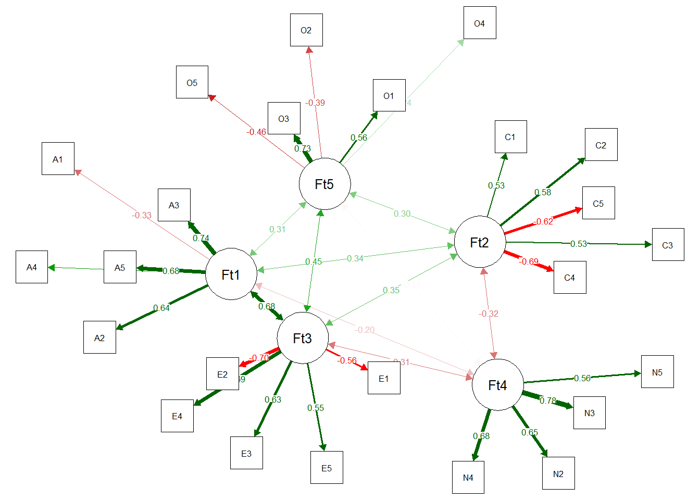

This is lavaan 0.6-17
lavaan is FREE software! Please report any bugs.7 Exploratory Graph Analysis
In psychology, education, and behavioral sciences, we use scales/instruments to measure a particular construct (e.g., anxiety, happiness). To do this, we usually have a questionnaire with X number of items and we want to know the number of latent factors that arise from these items. This is usually done with Factor Analysis, where the number of dimensions is usually estimated by examining the patterns of eigenvalues. Two of the most common methods that use eigenvalues are the Kaiser-Guttman criterion that selects factors that have eigenvalue > 1 and parallel analysis. However, many criticisms have been made regarding the performance of these methods in estimating dimensionality. For example, the Kaiser-Guttman criterion can either underestimate or overestimate the number of factors (Zwick & Velicer, 1986). Traditional parallel analysis tends to have inflated Type I errors in binary data (Green et al., 2016).
Due to these and other limitations, Golino & Epskamp (2017) proposed a new method for estimating the dimensionality of a scale, called Exploratory Graph Analysis (EGA). This chapter will be a brief introduction to recent developments in EGA, aiming to disseminate this method.
7.1 About the Method
Network psychometrics methods have recently gained attention in psychological sciences literature. This may be due to the change in theoretical interpretation of correlations observed in the data. Traditionally, as done by EFA, psychometric models assume that latent causes explain observed behavior (i.e., items). Emerging areas, such as network psychometrics, present promising models for research in psychology, as they support theoretical perspectives on complexity, that is, they consider psychological attributes as systems of observed behaviors that reinforce each other in a dynamic way.
There is a relationship between a typical latent variable in traditional psychometrics and in network clusters. As said by Golino & Epskamp (2017), if the data-generating mechanism is the reflective model, the data cluster items into its’ factors. For instance, if the data-generating mechanism of the Big-5 personality model is reflective, we will have 5 clusters in a network, one of each factor.
Thus, EGA is a dimensionality estimation method, just like factor analysis. EGA is also an exploratory method that does not depend on a priori assumptions, therefore, it does not require guidance from the researcher. In EGA, vertices represent variables (i.e., items) and edges represent the relationship (i.e., correlations) between two vertices. Golino et al. (2020) showed that the EGA method performs as well as the best techniques for selecting the number of factor analysis dimensions. Furthermore, EGA was one of the methods with the highest accuracy in general.
To run an EGA, we have, basically, 3 steps:
Determine redundancies in items through Unique Variable Analysis.
Perform the EGA itself.
Check the stability of the structure found by EGA, through bootstrap.
7.2 Unique Variable Analysis (UVA)
In reflective models (i.e., the Factor Analysis model), observed variables correlate only because they have a common cause (i.e., the latent trait). The name for this is local independence, that is, the idea that the correlation, or dependence, observed between items is explained exclusively by the latent trait.
Items are considered redundant when, even after considering the latent trait as the cause of the correlation, the items still have a strong correlation. This correlation of items that are independent of the latent trait may cause unintended effects when estimating dimensionality in psychometric modeling. Correlation between items for latent variable models has the potential to cause a violation of the principle of local independence, resulting in poor fit (Christensen et al., 2023).
For these reasons, we first use Unique Variable Analysis (UVA) to detect local independence before estimating any factors. UVA (Christensen et. al., 2023) uses the weighted topological overlap measure (Nowick et al., 2009) in an estimated network. The weighted topological overlap measure is calculated as:
\[ 𝝎 = \frac{𝚺_ua_{iu}a_{uj}+a_{ij}}{min\{k_i,k_j\}+1-a_{ij}} \]
where \(a_{ij}\) is the weight of the edge between vertices \(i\) and \(j\). \(u\) represents the shared connections with other edges for edges \(i\) and \(j\). \(k\) represents the sum of all connections for a given edge.
The UVA algorithm first calculates the association structure of observed data and then uses a threshold or significance test to determine redundancy between pairs of variables (Christensen et al., 2023). Values greater than 0.25 are determined to have considerable local dependence (i.e., redundancy) that must be addressed. By default, UVA will remove all redundant variables (\(𝟂\)≥ 0.25) except one based on the following rules:
duplets (two variables): The variable with the smallest maximum weighted topological overlap for all other variables (except the one with which it is redundant) is kept and the other is removed.
triplets (three or more variables): The variable with the highest weighted average topological overlap for all other variables that are redundant with each other is kept and all others are removed.
7.3 Exploratory Graph Analysis
Let’s explain a little about EGA step by step: what a partial correlation is, glasso, EBIC and Walktrap.
7.3.1 Partial Correlation
Just like a standard linear correlation (which we often use), partial correlation represents the degree of association between two variables. However, unlike the standard linear correlation, the partial correlation calculates this association between two variables by controlling for all other variable correlations that you put into the model. In the EGA example, we see the relationship between an Item 1 and Item 2 controlling the effect of all other items. To calculate, simply calculate the inverse of the covariance matrix. As the aim is not to teach how to calculate the inverse of a matrix, we leave it as homework.
7.3.2 What is EBICglasso
When we are calculating relationships between variables, we can have several spurious correlations. In the case of network analysis, these spurious correlations are removed to better identify the model. The glasso algorithm directly penalizes the elements of the variance-covariance matrix, turning them into zero when we have correlations that are low. It works as follows:
GLASSO is a regularization technique that reduces parameter estimates with some estimates, making them exactly zero. LASSO uses a parameter called lambda (\(𝛌\)), which controls the sparsity of the network. Smaller values of \(𝛌\) remove fewer edges (i.e., relationships between variables), increasing the possibility of including spurious correlations, while higher values of \(𝛌\) remove more edges, increasing the possibility of removing relevant edges. When \(𝛌\) = 0, the estimates are equal to the ordinary least squares solution to the partial correlation matrix.
The popular approach in the network psychometrics literature is to compute models at various values of λ (usually 100) and select the model that minimizes the Extended Bayesian Information Criterion (EBIC). EBIC model selection uses a gamma hyperparameter (\(𝞬\)) to control how much it prefers simpler models (i.e. models with fewer edges). Larger values of \(𝞬\) lead to simpler models, while smaller values of \(𝞬\) lead to denser models. When \(𝞬\) = 0, the EBIC is equal to the Bayesian Information Criterion.
7.3.3 The Clustering Algorithm: An Example with Walktrap
This is a hierarchical clustering algorithm, and uses the following step by step:
The algorithm begins by computing a transition matrix, where each element represents the probability of one vertex arriving at another (based on the strength of the vertex).
Start random walks for a certain step number (e.g., 4) using the matrix for possible destinations.
Uses Ward’s (1963) clustering procedure, where each vertex begins with its own cluster; then it joins adjacent clusters (reducing the squared distances between other clusters).
Modularity (Newman, 2006) is used to determine an optimal partition of clusters.
Each detected cluster represents a latent trait.
7.4 EGA’s Stability
To verify the stability of the EGA results, the method used is the bootstrap. The EGA Bootstrap (Christensen & Golino, 2021) performs a parametric or resampling (non-parametric) procedure to determine the robustness of the EGA empirical analysis. Generally, 500 iterations/simulated databases are simulated with the same correlation pattern as your database. The output of the EGA bootstrap graph (bootEGA) is the median network structure that represents the median value of each pairwise partial correlation across the bootstraps. After obtaining the median value for each pairwise partial correlation, a community detection algorithm is applied.
The Dimension Stability output produces a graph of how many times each variable is replicating in its empirical structure through bootstraps. Structural consistency is defined as the extent to which each empirically derived dimension is exactly (i.e., identical variable composition) recovered from the replicated bootstrap samples (Christensen, Golino, & Silvia, 2020). In general, structural consistency and item stability values greater than 0.70-0.75 reflect sufficient stability (Christensen & Golino, 2021).
7.5 How to Run the EGA Step By Step in R
To run EGA, we first have to install the EGAnet (Golino & Christensen, 2023) package to perform the analyses, and the psychTools (Revelle, 2023) package to get a database, and lavaan (Rosseel, 2012) to request the fit indices.
And tell the program that we are going to use the functions of these packages.
To demonstrate the step-by-step process I mentioned, we will use the bfi dataset from the psychTools package. We will use 25 items from a self-report personality questionnaire based on the Big-5 model. The bank has data on 2,800 subjects.
We will first select the bank’s personality items, without considering the sociodemographic items.
7.5.1 UVA in R
To run the UVA in R, we use the following code in this database.
bfi_uva <- UVA(
data = bfi_items,
key = as.character(psychTools::bfi.dictionary$Item[1:25])
)
# Show Results
bfi_uvaVariable pairs with wTO > 0.30 (large-to-very large redundancy)
node_i node_j wto
Get angry easily. Get irritated easily. 0.431
----
Variable pairs with wTO > 0.25 (moderate-to-large redundancy)
----
Variable pairs with wTO > 0.20 (small-to-moderate redundancy)
node_i
Don't talk a lot.
Am exacting in my work.
Am indifferent to the feelings of others.
Do things in a half-way manner.
Know how to comfort others.
Get angry easily.
Have frequent mood swings.
Inquire about others' well-being.
node_j wto
Find it difficult to approach others. 0.226
Continue until everything is perfect. 0.225
Inquire about others' well-being. 0.219
Waste my time. 0.209
Make people feel at ease. 0.207
Have frequent mood swings. 0.205
Often feel blue. 0.204
Know how to comfort others. 0.203Based on the above result, there are a couple of variables that are above the acceptable threshold: Getting angry easily. and gets irritated easily. (\(𝟂\) = 0.431). Variables that were removed in this automated process can be viewed using:
Next, we will work with the dataset without the redundant item obtained from the UVA function.
7.5.2 EGA in R
With item redundancies addressed, EGA is ready to be applied to your questionnaire. Just use the following function.
We see that five dimensions are estimated, as each color represents a factor (see the dots on the right). Therefore, the result is consistent with the five-factor model of personality. We can get a summary of this output in text format as follows.
Model: GLASSO (EBIC with gamma = 0.5)
Correlations: auto
Lambda: 0.0597096451199323 (n = 100, ratio = 0.1)
Number of nodes: 24
Number of edges: 125
Edge density: 0.453
Non-zero edge weights:
M SD Min Max
0.041 0.112 -0.270 0.396
----
Algorithm: Walktrap
Number of communities: 5
A1 A2 A3 A4 A5 C1 C2 C3 C4 C5 E1 E2 E3 E4 E5 N2 N3 N4 N5 O1 O2 O3 O4 O5
1 1 1 1 1 2 2 2 2 2 3 3 3 3 3 4 4 4 4 5 5 5 5 5
----
Unidimensional Method: Louvain
Unidimensional: No
----
TEFI: -24.989The summary tells us which model was used to estimate the network (i.e., “glasso” explained earlier) and which parameters were used for that model, such as gamma (\(𝞬\)=0.5) and lambda (\(𝛌\)=0, 0597). Then there are descriptions about the network, such as the number of vertices, edges, edge density, and descriptive statistics about the edges. Third, it informs which community detection algorithm was used, the number of communities (dimensions) and the association of each variable. Fourth, the method to check whether the model is one-dimensional. Finally, the Total Entropy Fit Index (or tefi) is provided, which can be used for model comparison (see Golino et al., 2021).
7.5.3 EGA’s Stability in R
To check how stable EGA is in your database, simply use the following code.
In this example, the median structure found in the bootstrap matches our empirical structure.
Although this result without much error is common, it is not always the case. This is because as a community detection algorithm is applied ad-hoc to the median network structure in the bootstrap, it is possible that the number and content of communities do not match the empirical structure. This possibility happens from time to time and does not mean there is anything wrong with your analysis, but it may suggest some instability in the structure.
Let’s look at some basic descriptive statistics about bootstrap analysis.
Model: GLASSO (EBIC)
Correlations: auto
Algorithm: Walktrap
Unidimensional Method: Louvain
----
EGA Type: EGA
Bootstrap Samples: 500 (Parametric)
4 5
Frequency: 0.058 0.942
Median dimensions: 5 [4.54, 5.46] 95% CIAs with the empirical procedure, the first information is about the estimation methods and algorithms used. Then there is information about the bootstrap procedure including how often each number of communities was observed and the median number of communities (with 95% confidence intervals). In this example, the structure is quite stable and can be taken as preliminary evidence of a robust structure.
This summary alone cannot tell us if everything is ok with stability. To check this we have to use the following code.
EGA Type: EGA
Bootstrap Samples: 500 (Parametric)
Proportion Replicated in Dimensions:
A1 A2 A3 A4 A5 C1 C2 C3 C4 C5 E1 E2 E3
1.000 1.000 1.000 0.994 1.000 1.000 1.000 1.000 1.000 1.000 0.994 0.994 0.992
E4 E5 N2 N3 N4 N5 O1 O2 O3 O4 O5
0.992 0.958 1.000 1.000 1.000 1.000 0.948 0.948 0.948 0.948 0.948
----
Structural Consistency:
1 2 3 4 5
0.994 1.000 0.966 1.000 0.948 Our results demonstrate that the five-dimensional structure we identified is quite robust, given that all items replicated in their given dimension more than 70% or 75% of the simulated databases.
We can see network loadings (similar to factor loadings), with the code:
Loading Method: BRM
1 2 3 4 5
A2 0.384 0.034 0.058 0.016 0.021
A3 0.38 0 0.092 0 0.01
A5 0.217 0 0.178 -0.034 0.012
A4 0.163 0.1 0.046 -0.006 -0.012
A1 -0.166 0.022 0.011 0.027 -0.034
C2 0.062 0.311 0.052 0.036 0.029
C1 0 0.264 0.031 0 0.06
C3 0.035 0.253 0.026 0 0
C5 -0.05 -0.253 -0.038 0.107 0.039
C4 -0.015 -0.347 -0.018 0.062 -0.08
E4 0.188 0 0.263 -0.037 -0.048
E3 0.142 0 0.172 0.007 0.159
E5 0.064 0.122 0.172 -0.063 0.093
E1 -0.011 0.028 -0.25 -0.02 -0.023
E2 -0.021 -0.025 -0.333 0.095 0.074
N3 0 0.016 0.006 0.458 0.022
N2 -0.064 -0.036 0.041 0.298 0.01
N4 0 -0.081 -0.101 0.281 0.056
N5 0.015 0.054 -0.041 0.238 -0.079
O3 0.022 0.032 0.142 0 0.308
O1 -0.003 0.023 0.12 -0.011 0.239
O4 0.032 0.061 -0.053 0.083 0.174
O2 0.008 -0.045 0.022 0.064 -0.204
O5 0.023 -0.038 0.022 0.018 -0.289
Standardized loadings >= |0.00| are displayed. To change this 'minimum', use `print(net.loads_object, minimum = 0.10)`We were also able to obtain the adjustment through a Confirmatory Factor Analysis using EGAnet.
fit <- EGAnet::CFA(bfi_ega,
data = bfi_uva$reduced_data,
estimator = "WLSMV",
plot.CFA = TRUE,
layout = "spring"
)[1] "A1" "A2" "A3" "A4" "A5"
[1] "C1" "C2" "C3" "C4" "C5"
[1] "E1" "E2" "E3" "E4" "E5"
[1] "N2" "N3" "N4" "N5"
[1] "O1" "O2" "O3" "O4" "O5"
To request fit indices we can use lavaan.
npar fmin
82.000 0.738
chisq df
4132.221 242.000
pvalue chisq.scaled
0.000 3570.714
df.scaled pvalue.scaled
242.000 0.000
chisq.scaling.factor baseline.chisq
1.157 17655.215
baseline.df baseline.pvalue
276.000 0.000
baseline.chisq.scaled baseline.df.scaled
14781.836 276.000
baseline.pvalue.scaled baseline.chisq.scaling.factor
0.000 1.194
cfi tli
0.776 0.745
cfi.scaled tli.scaled
0.771 0.738
cfi.robust tli.robust
0.777 0.746
nnfi rfi
0.745 0.733
nfi pnfi
0.766 0.672
ifi rni
0.777 0.776
nnfi.scaled rfi.scaled
0.738 0.725
nfi.scaled pnfi.scaled
0.758 0.665
ifi.scaled rni.scaled
0.771 0.771
nnfi.robust rni.robust
0.746 0.777
logl unrestricted.logl
-109988.969 -107922.858
aic bic
220141.938 220628.802
ntotal bic2
2800.000 220368.260
scaling.factor.h1 scaling.factor.h0
1.155 1.147
rmsea rmsea.ci.lower
0.076 0.074
rmsea.ci.upper rmsea.ci.level
0.078 0.900
rmsea.pvalue rmsea.close.h0
0.000 0.050
rmsea.notclose.pvalue rmsea.notclose.h0
0.000 0.080
rmsea.scaled rmsea.ci.lower.scaled
0.070 0.068
rmsea.ci.upper.scaled rmsea.pvalue.scaled
0.072 0.000
rmsea.notclose.pvalue.scaled rmsea.robust
0.000 0.076
rmsea.ci.lower.robust rmsea.ci.upper.robust
0.074 0.078
rmsea.pvalue.robust rmsea.notclose.pvalue.robust
0.000 0.001
rmr rmr_nomean
0.144 0.150
srmr srmr_bentler
0.070 0.070
srmr_bentler_nomean crmr
0.073 0.073
crmr_nomean srmr_mplus
0.076 0.070
srmr_mplus_nomean cn_05
0.073 190.246
cn_01 gfi
201.638 0.992
agfi pgfi
0.990 0.741
mfi ecvi
0.499 1.534 7.6 References
Christensen, A. P., Garrido, L. E., & Golino, H. (2023). Unique variable analysis: A network psychometrics method to detect local dependence. Multivariate Behavioral Research, 1-18. https://doi.org/10.1080/00273171.2023.2194606
Christensen, A. P., & Golino, H. (2021). Estimating the stability of psychological dimensions via bootstrap exploratory graph analysis: A Monte Carlo simulation and tutorial. Psych, 3(3), 479-500. https://doi.org/10.3390/psych3030032
Christensen, A. P., Golino, H., & Silvia, P. J. (2020). A psychometric network perspective on the validity and validation of personality trait questionnaires. European Journal of Personality, 34(6), 1095-1108. https://doi.org/10.1002/per.2265
Green, S. B., Redell, N., Thompson, M. S., & Levy, R. (2016). Accuracy of revised and traditional parallel analyses for assessing dimensionality with binary data. Educational and Psychological Measurement, 76(1), 5–21. https://doi.org/10.1177/0013164415581898
Golino, H., & Christensen, A. P. (2023). EGAnet: Exploratory Graph Analysis – A framework for estimating the number of dimensions in multivariate data using network psychometrics. R package.
Golino, H., & Epskamp, S. (2017). Exploratory graph analysis: A new approach for estimating the number of dimensions in psychological research. PloS one, 12(6), e0174035. https://doi.org/10.1371/journal.pone.0174035
Golino, H., Moulder, R., Shi, D., Christensen, A. P., Garrido, L. E., Nieto, M. D., … & Boker, S. M. (2021). Entropy fit indices: New fit measures for assessing the structure and dimensionality of multiple latent variables. Multivariate Behavioral Research, 56(6), 874-902. https://doi.org/10.1080/00273171.2020.1779642
R Core Team (2023). R: A Language and Environment for Statistical Computing. R Foundation for Statistical Computing, Vienna, Austria. https://www.R-project.org/.
Revelle, W. (2023). psychTools: Tools to Accompany the ‘psych’ Package for Psychological Research. Northwestern University, Evanston, Illinois. R package. https://CRAN.R-project.org/package=psychTools.
Rosseel, Y. (2012). lavaan: An R Package for Structural Equation Modeling. Journal of Statistical Software, 48(2), 1-36. https://doi.org/10.18637/jss.v048.i02
Newman, M. E. J. (2006). Modularity and community structure in networks. Proceedings of the National Academy of Sciences, 103, 8577–8582. https://doi.org/10.1073/pnas.0601602103
Nowick, K., Gernat, T., Almaas, E., & Stubbs, L. (2009). Differences in human and chimpanzee gene expression patterns define an evolving network of transcription factors in brain. Proceedings of the National Academy of Sciences, 106(52), 22358-22363. https://doi.org/10.1073/pnas.0911376106
Ward, J. H. (1963). Hierarchical clustering to optimise an objective function. Journal of the American Statistical Association, 58, 238–244.
Zwick, W.R. & Velicer, W.F. (1986). Comparison of five rules for determining the number of components to retain. Psychological Bulletin, 99, 432–442. https://doi.org/10.1037/0033-2909.99.3.432